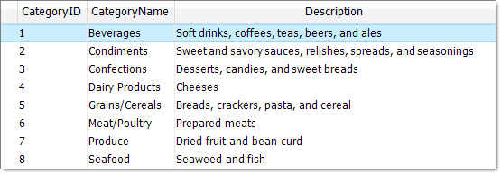
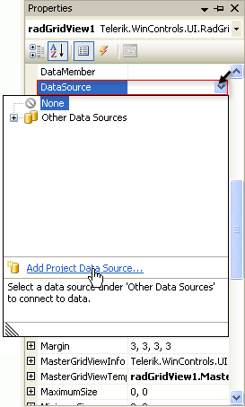
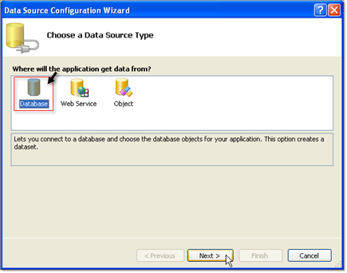
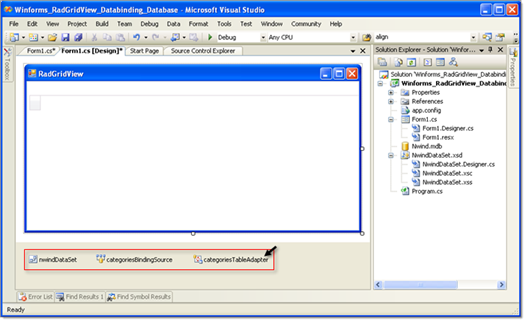

Tutorial: Binding to DataTable or DataSet
The following tutorial demonstrates binding to a single database table. For information on binding to multiple tables see the Binding to Hierarchical Data topic.

Place a RadGridView component on a form. Set the Dock property to Fill.
In the Properties window locate the DataSource property and click the arrow to open the list. Select the Add Project Data Source... link. This step will display the Data Source Configuration Wizard.
In the Data Source Configuration Wizard Choose a Data Source Type page, select the Database icon. Click the Next button.
In the Choose Your data Connection page click the New Connection... button. This step will display the Add Connection dialog.

In the Add Connection dialog click the Change... button. This step will display the Change Data Source dialog.

Select the Microsoft Access Database File data source. Click the OK button to close the Change Data Source dialog.

The Add Connection dialog will appear. Click the Database File Name __Browse__button and locate the "NWind.mdb" file from the Telerik UI for WinForms directory in the "\Examples\DataSources" directory. Click the __OK__button to close the Add Connection dialog.
In the Choose Your Database Objects page, select the "Categories" checkbox. Click the Finish button to close the Data Source Configuration Wizard.

In the Visual Studio Properties window for the grid DataSource property select the "Categories" table. This step will create DataSet, BindingSource and TableAdapter objects for the categories table.

The project design should look something like the screenshot below. Note the new data components in the component tray under the design surface.
Replace the Form_Load event handler with the following code. The "foreach" code iterates all the columns in the grid and calls BestFit() so that the columns will expand to show the data.
[C#] Best fit columns
private void TutorialBindingToDataTableOrDataSet_Load(object sender, EventArgs e)
{
this.categoriesTableAdapter.Fill(this.nwindDataSet.Categories);
foreach (GridViewDataColumn column in radGridView1.Columns)
{
column.BestFit();
}
}
[VB.NET] Best fit columns
Private Sub TutorialBindingToDataTableOrDataSet_Load(ByVal sender As System.Object, ByVal e As System.EventArgs) Handles MyBase.Load
Me.CategoriesTableAdapter.Fill(Me.NwindDataSet.Categories)
For Each column As GridViewDataColumn In RadGridView1.Columns
column.BestFit()
Next
End Sub
- Press F5 to run the application.